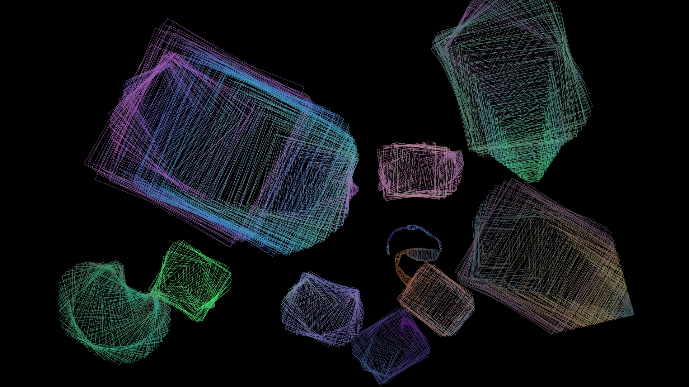
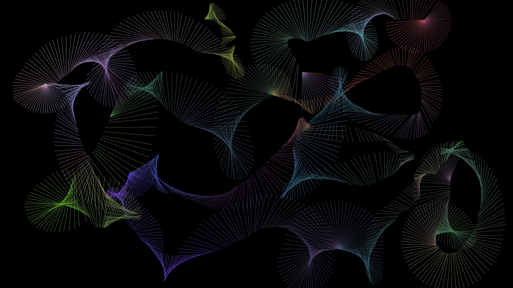
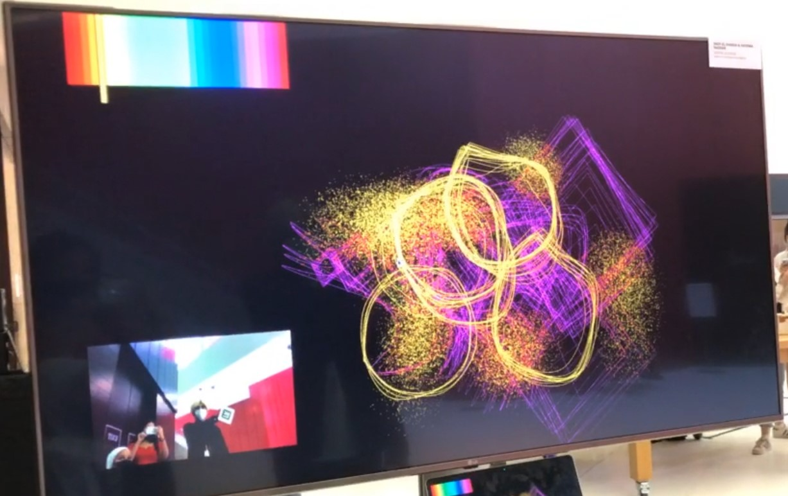
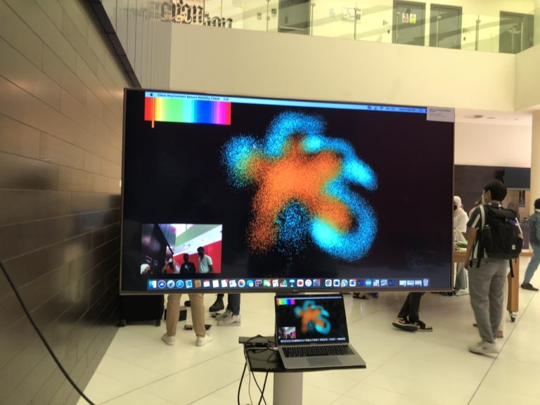
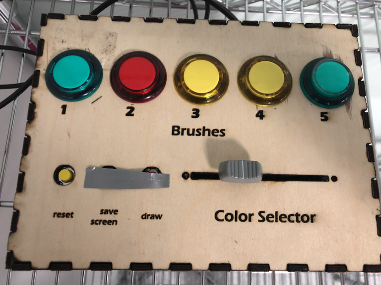

Digital Doodle
Project Documentation
Fatema Nassar & Ingy El Sheikh
Class Intro. to Interactive Media
Introduction
This was quite a journey, with many ups and downs but definitely one that ended in relief and content! The idea of our final project revolved giving our audience a chance to go back to their childhood and just have fun! Anyone that interacts with our project is given the opportunity to just draw whatever their heart desires, and the physical interactivity (because users will draw with their hands) gives it an extra interesting and more immersive experience. We wanted our project to give the user complete freedom, so they users can choose between 5 different brushes and use the color they want to draw using the color selector.


Description
Implementation:
There were mainly two aspects of this project, the processing aspect and the Arduino aspect (and serial communication). This is essentially also how we split the work between us. I essentially took on the challenge of the processing side of things and Ingy took on the challenge of the Arduino side of things and the blog documentations. So I is the one that created the beautiful generative art pieces that played the role of our brushes, and she worked on the fiducial tracking as well (which was a pain! so she did a great job). While Ingy focused on the arduino side of things, wiring up the buttons and slide potentiometer, creating the color gradient and its code on processing, and creating the serial communication between arduino and processing, Ingy also took responsibility of the blog documentation. However, we also found ourselves working together most of the time, I would help Ingy with the arduino when she was stuck and vice versa. So it eventually turned into us working together on most of the aspects of the project rather than individually which worked out great!


lessons learned/how to improve:
This project is one that definitely helped us grow. Naturally it was not a perfect linear growth, hence there is always room for improvement. reflecting on where we can improve is definitely an essential thing to do. After the showcase these are the things we noticed could have been executed better:
- During our presentation to the class on the 13th, a very inconvenient and stupid mistake (we just need to move the location of the project slightly due to lighting issue) caused us to panic and not be able to show the class our project. lesson learned! we should have set up earlier especially since our project was not very straight forward and is prone to spontaneous errors.Luckily it all worked out in the end.
- When it comes to the project itself, we found that we should have included some sort of feedback for when the buttons are pressed, just to let the person know which brush they are using.
- We also learned that sometimes the finer details take even more time and effort than the bigger aspects of the project! and they bring the project together at the end.
Progress
- First of all, we finalized the idea since we were not working together initially. We decided on everything we needed and the process we would complete the project in.
- The brushes were complete (the 5 generative art pieces that play as the brushes)
- started working on the fiducial QR code (which was a pain !) in order to allow the user to use their hands to draw on the sketch, we decided we will have a glove with the QR stuck to it and the user will wear the glove to draw, luckily we were able to get it to work. Simultaneously we were working on the arduino side of things, completing first the color gradient. The color gradient on processing is actually an image and the get(); function was used to get the color at the position of the rectangle that was also mapped and connected to arduino through the slide potentiometer.
- Completed the the creation of the box using the laser cutter ! as well as finishing connecting the arcade buttons on arduino and creating code to connect it to processing, so that each button corresponds to a different brush.
- We then finished assembling the box and creating the reset button (to return the sketch back to being blank again). We decided to create a box, so that the arduino doesn’t show as it is not very visually pleasing, and in order to ensure that nothing moves around as we are using a lot of wires that may move around.
- We conducted user testing.

Videos
Here are some videos of people using the final product!!
Video 1:
Video 2:
Video 3: